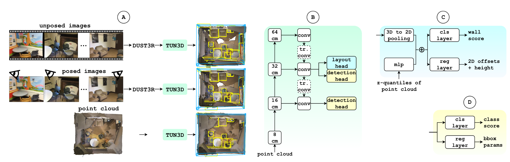

Layout estimation and 3D object detection are
two fundamental tasks in indoor scene understanding. When
combined, they enable the creation of a compact yet semanti-
cally rich spatial representation of a scene. Existing approaches
typically rely on point cloud input, which poses a major
limitation since most consumer cameras lack depth sensors
and visual-only data remains far more common. We address
this issue with TUN3D, the first method that tackles joint
layout estimation and 3D object detection in real scans, given
multi-view images as input, and does not require ground-
truth camera poses or depth supervision. Our approach builds
on a lightweight sparse-convolutional backbone and employs
two dedicated heads: one for 3D object detection and one for
layout estimation, leveraging a novel and effective parametric
wall representation. Extensive experiments show that TUN3D
achieves state-of-the-art performance across three challenging
scene understanding benchmarks: (i) using ground-truth point
clouds, (ii) using posed images, and (iii) using unposed images.
While performing on par with specialized 3D object detection
methods, TUN3D significantly advances layout estimation, set-
ting a new benchmark in holistic indoor scene understanding.
Method

(A) TUN3D can flexibly process various inputs: unposed images, posed images, and point clouds. (B) TUN3D model is constructed of a 3D sparse-convolutional backbone and neck, followed by two task-specific heads. (C) The novel layout head predicts wall scores and regresses wall parameters for each wall comprising the layout. (D) The detection head outputs object class scores and coordinates of a 3D bounding box of an object.